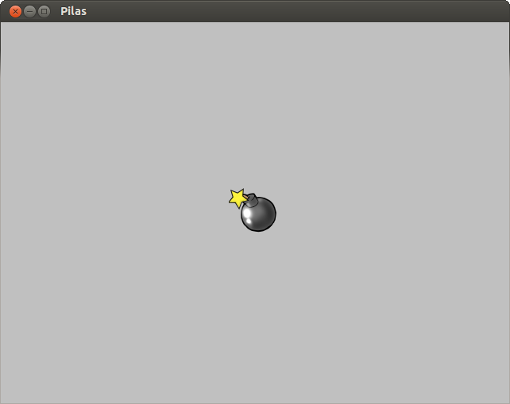
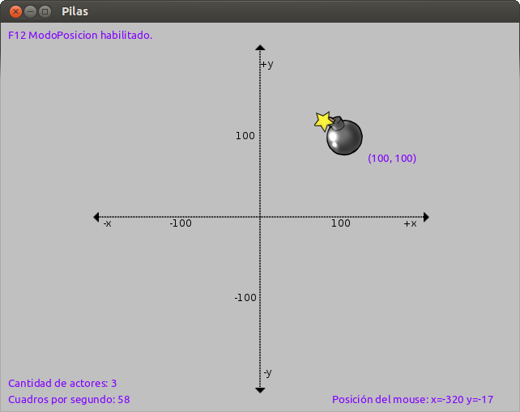

Un concepto importante en pilas es del de actores.
Actor:
Un actor en pilas es un objeto que aparece en pantalla, tiene una posición determinada y se puede manipular.
Por ejemplo:
Para empezar, pilas se puede usar directamente desde un intérprete interactivo de python. Una vez dentro del intérprete, tienes que escribir estas dos líneas de código:
1 2 | import pilas # importa la librería pilas
pilas.iniciar() # inicia una ventana predeterminada
|
En tu pantalla tiene que aparecer una ventana de color gris.
Para ver un ejemplo de actor podemos ingresar (luego de haber generado la vetana con las líneas anteriores):
1 | bomba = pilas.actores.Bomba() # le asignamos a "bomba" el actor "Bomba()", ubicado en pilas.actores.
|
Se va a crear inmediatamente una bomba, en la ventana, como ésta:
Como Bomba es un actor, encontraremos mucha funcionalidad en él que la tendrán el resto de los actores.
Por ejemplo:
Podemos cambiar la posición del actor en el eje de cordenadas mediante las propiedades x e y:
1 2 | bomba.x = 100
bomba.y = 100
|
Se puede observar si pulsas la tecla F12, la posición de los actores en el eje, de esta forma:
Este atributo indica su tamaño en pantalla:
1 | bomba.escala = 2 # le duplicamos el tamaño a "bomba"
|
La rotación siempre se indica en grados, e indica el grado de inclinación hacia la derecha:
1 | bomba.rotacion = 45
|
Otro concepto a aprender es el de fondos.
Fondo:
En pilas un fondo es un concepto muy simple, es solamente una imágen detras de mis actores, que suele ser un paisaje.
Por ejemplo:
1 | fondo = pilas.fondos.Tarde()
|
Bueno, después de esta primera parte ya vamos a poder probar muchas cosas, pero ya que esta guía está destinada a un determinado juego, para conocer más y poder aplicarlo consulten al manual.
A partir de ahora solo vamos a ver lo necesario para nuestro “Pong”.